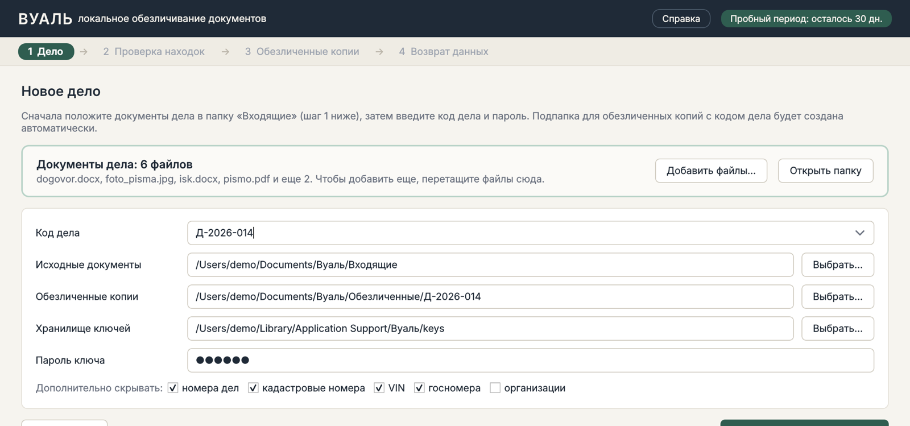
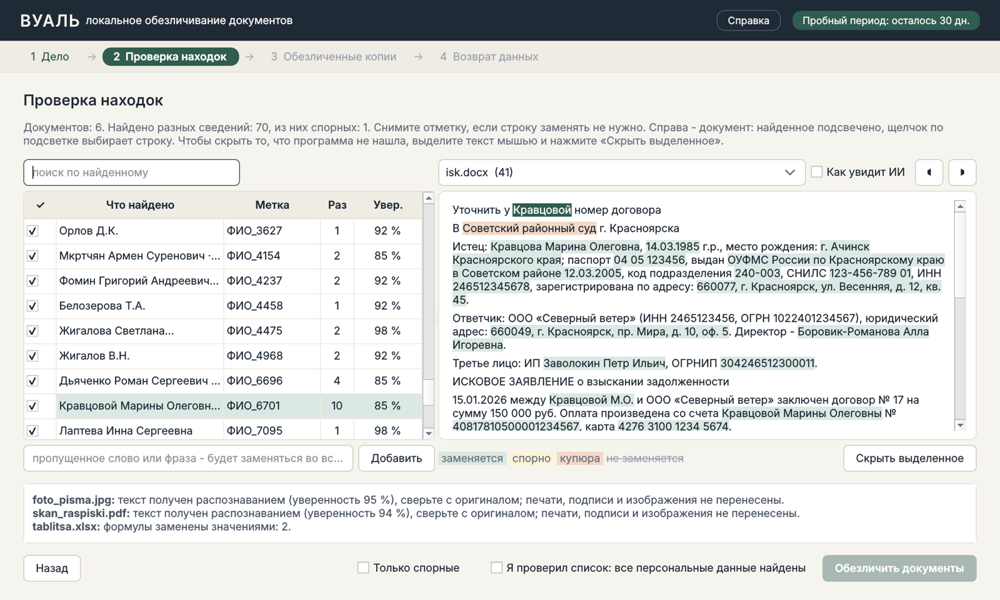
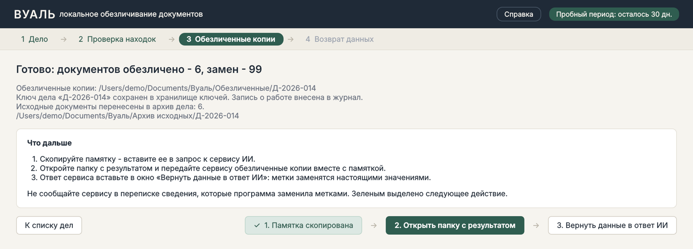
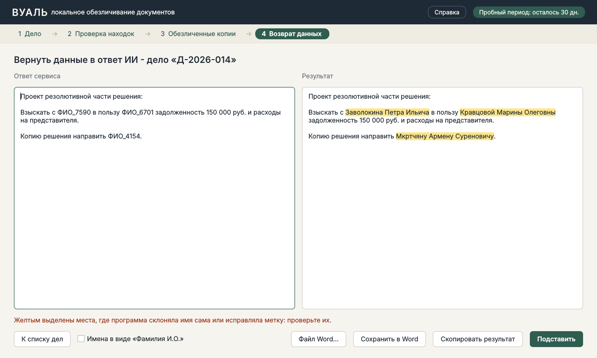

ВУАЛЬ
ВУАЛЬДля юристов, адвокатов и нотариусов
Документы для ИИ - без персональных данных клиента
Вуаль находит в документах ФИО, паспорта, адреса, телефоны и реквизиты, заменяет их метками и сохраняет обезличенные копии. Ответ ИИ программа возвращает с настоящими данными - в правильных падежах. Все происходит на вашем компьютере.
macOS. Версия для Windows готовится.
Ваш документ
Истец Кравцова Марина Олеговна, паспорт 04 05 123456, проживает: г. Красноярск, ул. Весенняя, д. 12, кв. 45, просит взыскать с Заволокина П.И. 150 000 руб.Копия для ИИ
Истец ФИО_3552, паспорт ПАСПОРТ_4810, проживает: АДРЕС_7607, просит взыскать с ФИО_7886 150 000 руб.Зачем обезличивать
Сервисы ИИ полезны в работе с делами, но почти все сильные модели - иностранные. Документ клиента, загруженный в такой сервис, уходит на зарубежный сервер вместе с его персональными данными.
Трансграничная передача
Передача персональных данных иностранному сервису - трансграничная передача. Ст. 12 Федерального закона «О персональных данных» требует заранее уведомить Роскомнадзор и соблюсти условия передачи.
Профессиональная тайна
Для адвоката и нотариуса сведения о клиенте - еще и предмет тайны. Отправить их стороннему сервису - значит раскрыть их без поручения доверителя.
Обезличенные данные
Если заменить сведения метками, по документу нельзя установить человека без ключа. Ключ остается у вас, а сервису ИИ уходит только текст с метками.
Как это работает
Четыре шага. Исходные документы и ключ дела не покидают компьютер.
Заведите дело
Перетащите документы в окно программы, задайте короткий код дела без фамилий и пароль ключа. Программа ведет список дел: в любое дело можно добавить новые документы - те же лица получат те же метки.
- Word, PDF, сканы и фотографии, Excel
- Одна рабочая папка или своя папка для каждого дела

Проверьте находки
Найденное видно списком и прямо в документе, с подсветкой. Спорные находки выделены. Лишнее можно снять, а любой пропущенный фрагмент - выделить мышью и скрыть.
- Режим «Как увидит ИИ» - документ так, как он уйдет в сервис
- Купюры: скрыть фрагмент в одном месте или во всех документах дела
- Одно лицо - одна метка во всех документах

Передайте копии ИИ
Обезличенные копии сохраняются в отдельную папку. К ним прилагается короткая памятка для ИИ: как обращаться с метками. Программа подсказывает порядок действий.
- Оформление Word сохраняется
- Колонтитулы, сноски и примечания обезличиваются; свойства файла, правки, изображения и диаграммы удаляются
- Каждая копия перед сохранением проходит контрольную проверку

Верните данные в ответ
Вставьте ответ ИИ или выберите документ Word с метками. Программа подставит настоящие данные в нужном падеже. Места, которые стоит перепроверить, подсвечены.
- «Взыскать с ФИО_7886» → «Взыскать с Заволокина Петра Ильича»
- Результат не сохраняется в папку для ИИ

Что программа умеет
Сделана юристом для юридических документов: исков, договоров, доверенностей, выписок, протоколов.
Прямые идентификаторы
ФИО и инициалы, паспорта, СНИЛС, ИНН, телефоны, почта, адреса, счета и карты, даты и места рождения.
Косвенные идентификаторы
Номера дел, кадастровые номера, VIN и госномера - по ним человека находят в открытых базах. Включаются отметками.
Организации по выбору
Наименования, ИНН, КПП, ОГРН скрываются, если сведения о клиенте-организации составляют тайну.
Падежи
При возврате ФИО ставится в нужной форме: «взыскать с Заволокина Петра Ильича», «направить Кравцовой Марине Олеговне». Окончания править вручную не нужно.
Сканы и фото
Распознавание текста встроено и работает без интернета. Результат - текстовая копия в Word.
Карантин
Медицинские документы, сведения о здоровье и судимости не обрабатываются: такие файлы не попадают в копии.
Метки не пересекаются
Номера меток уникальны во всех делах. Метка одного дела не подставится в ответ по другому.
Искаженные метки
Если ИИ изменил метку - «Фио_3552», «ФИО 3552» - программа узнает ее и попросит проверить.
Купюры
Любой фрагмент - рассказ о третьем лице, сведения, составляющие тайну, - выделяется мышью и скрывается. При возврате он восстанавливается.
Скрытый текст
Колонтитулы, сноски, примечания и коды полей обрабатываются. Свойства файла, имена авторов правок и служебные части удаляются.
Контрольная проверка
Готовая копия перечитывается целиком. Если в ней осталось сведение, которое должно быть скрыто, копия не сохраняется.
Журнал без данных
Журнал фиксирует, что и когда обработано, без имен файлов и персональных данных.
Безопасность и ограничения
Программа обрабатывает чужие персональные данные, поэтому мы честно пишем, что она делает и чего не делает.
Как устроено
- Документы, ключи и результаты обрабатываются только на вашем компьютере
- Сеть используется только для проверки лицензии и обновлений, без содержимого документов
- Ключ дела зашифрован (AES-256), пароль знаете только вы
- Ключи нельзя положить в облачную папку - программа предупредит
- Копии с возвращенными данными не попадают в папку для ИИ
Что нужно знать
- Автоматический поиск не гарантирует обнаружения всех сведений. Перед отправкой результат проверяется вами
- Пароль ключа не восстанавливается: без него вернуть данные нельзя
- Печати, подписи, изображения и диаграммы в копии не переносятся
- Обязанности оператора персональных данных остаются на вас; программа - инструмент для их выполнения
Цена
Лицензия на одно устройство. Без автоматических списаний: продление - вручную, когда удобно.
Пробный период
30 дней, без оплаты и карты
- Все возможности программы
- После окончания возврат данных по созданным делам остается доступен
Год
250 ₽ в месяц, два месяца в подарок
- Все возможности программы
- Обновления
- Поддержка по почте
Скачать
Установите программу и работайте 30 дней бесплатно. Ключ для пробного периода не нужен: он включается при первом запуске.
macOS
Mac с процессором Apple (M1 и новее), macOS 12 и новее
Скачать для MacКак установить
- Откройте скачанный файл и перетащите «Вуаль» в папку «Программы».
- При первом запуске macOS может сообщить, что не удалось проверить разработчика. Откройте «Системные настройки» → «Конфиденциальность и безопасность» и нажмите «Все равно открыть».
Windows
Windows 10 и 11, 64-разрядная
Скачать для WindowsКак установить
- Запустите скачанный файл. Права администратора не нужны.
- Если Windows покажет окно SmartScreen, нажмите «Подробнее» → «Выполнить в любом случае».
Обновления ставятся поверх установленной версии: дела, ключи и настройки сохраняются. Программа сама сообщит о выходе новой версии.
Вопросы
Можно ли считать документы после программы обезличенными по закону?
Программа заменяет сведения метками, а соответствие хранит в зашифрованном ключе у вас - это метод введения идентификаторов. Требования к методам обезличивания установлены Приказом Роскомнадзора от 19.06.2025 № 140. Итоговую проверку результата и решение о передаче делаете вы: автоматический поиск может что-то пропустить.
Какие сервисы ИИ подходят?
Любые, которые принимают текст или файлы Word. Программа не подключается к сервисам ИИ сама: вы передаете копии так, как привыкли.
Что если ИИ напишет метку по-своему?
Памятка объясняет ИИ правила. Если метка все же искажена - другой регистр, латинская буква, дописанное окончание - программа узнает ее и подсветит место для проверки. Метки, которых нет в ключе дела, перечисляются отдельно.
Можно ли работать без интернета?
Да. Обработка документов сеть не использует. Интернет нужен при первом запуске - программа начинает пробный период или проверяет ключ - и затем хотя бы раз в 5 дней для проверки лицензии. На сервер передаются только ключ, код устройства и версия программы.
Кому подходит программа?
Адвокатам, нотариусам, юристам организаций и практикующим юристам - всем, кто использует ее в профессиональной деятельности. Программа - профессиональный инструмент, а не потребительский продукт.
Как перенести программу на другой компьютер?
Установите программу на новый компьютер и введите тот же ключ в окне лицензии - программа предложит перенести лицензию. Переносить ее можно не чаще одного раза в 30 дней; если компьютер вышел из строя раньше, напишите нам. Ключи дел переносятся вместе с хранилищем ключей.
Работайте с ИИ, не раскрывая клиента
Программа готовится к выпуску. Напишите нам, если хотите получить пробную версию одним из первых.
Написать о пробной версии